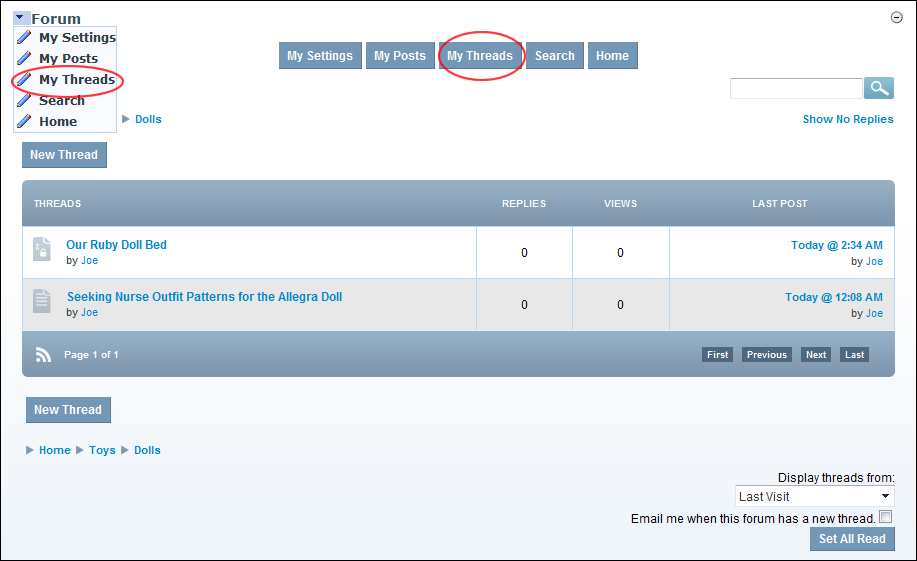
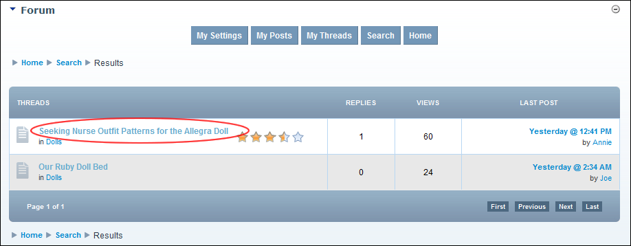

How a forum member can view all of their threads to the Forum module.


Tip: When viewing a thread, you can order it from Oldest To Newest or Newest To Oldest by selecting either option from the drop down list located in the bottom right corner of the page.